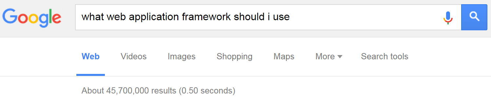

Meteor
Fullstack JavaScript Development
- Retro42: Our prototype application
- Why did we choose Meteor?
- What is Meteor?
- Show me some code!
- Comparing Meteor vs. MEAN
- More about Meteor
Raimond Reichert, Samuel Zürcher, Ergon Informatik AG
Meteor
Fullstack JavaScript Development
The rate of innovation in the JavaScript space is still incredible. For a while, it seemed that Angular would emerge as a winner in the web application frontend wars. Now, with Meteor, there is a new contender, a full-stack development framework which promises "to allow you to build advanced apps quickly, with a small team – allowing even individuals to achieve things that used to be possible only at large companies like Google and Facebook."
We wanted to gain some experience with Meteor with a very small project (approx. 20d, two people) to form our own opinion on these promises. We were quite impressed, as our estimates of what we would be able to build were way off: We developed roughly 50% more functionality than we had estimated. Meteor seemed easy to learn, and we very quickly felt very productive with Meteor.
In this presentation, we give a short overview on Meteor (with its Distributed Data Protocol, Latency Compensation, and Reactivity) and its components for rendering (Blaze) and testing (Velocity) as well as its package system (atmosphere.js). In a "slide coding" session, we implement a "lessons learned" feature of our demo application, Retro42 (retro42.herokuapp.com) as a showcase for coding with Meteor.
Raimond Reichert, Samuel Zürcher, Ergon Informatik AG
Meteor
Fullstack JavaScript Development
- Retro42: Our prototype application
- Why did we choose Meteor?
- What is Meteor?
- Show me some code!
- Comparing Meteor vs. MEAN
- More about Meteor
Retro42: Our prototype application
Our motivation for building Retro42
- Change begins with settings goals and tracking how you do on them.
- Retro42 lets you define and schedule questionnaires for yourself, or for your team.
- Retro42 helps you track your answers, and visualizes them for you.
Retro 42: Demo Screenshots
Start from an existing questionnaire template...
Arrow-down to see more...
Retro 42: Demo Screenshots
... or create a questionnaire from scratch.
Retro 42: Demo Screenshots
Define your schedule for answering your questionnaire.
Retro 42: Demo Screenshots
Retro42 will send you reminder mails according to the schedule
Retro 42: Demo Screenshots
Submit answers to your questionnaire
Retro 42: Demo Screenshots
Review all your answers to a questionnaire
Retro 42: Demo Screenshots
Review your answers to a textual question
Retro 42: Demo Screenshots
Review your answers to a numeric question

Retro 42: Demo Screenshots
Review the percentage of positive answers to a yes/no question
Retro 42: Demo Screenshots
Review a yes/no answers on a calendar
Retro 42: Demo Screenshots
Invite others to participate on a questionnaire

Retro 42: Demo Screenshots
Review a shared questionnaire and its participants
Retro 42: Demo Screenshots
Review your group's questionnaire passes
Retro 42: Demo Screenshots
Review all answers in a group questionnaire pass
Retro 42: Demo Screenshots
Review all answers to a numeric question
Retro 42: Demo Screenshots
Review all answers to a yes/no question
Meteor
Fullstack JavaScript Development
- Retro42: Our prototype application
- Why did we choose Meteor?
- What is Meteor?
- Show me some code!
- Comparing Meteor vs. MEAN
- More about Meteor
Why did we choose Meteor?
In 2015, what would you choose?

So many web and mobile app development options, yet still no clear winner emerges... making each option a risk with regards to long-term maintainability.
We chose to Meteor because it implements an approach which is quite different from what we've gotten used to.
Why did we choose Meteor?
Integrated development plattform
Why did we choose Meteor?
Principles of particular interest
- Full-stack JavaScript (or CoffeeScript, for us), for both backend and frontend
- Meteor's database everywhere principle makes it easy to build apps on top of databases
- We wanted to see Meteor's latency compensation principle and reactivity in action.
- It advertises fast and fun development, and who wouldn't like that:-)
- It promises one code base for web and mobile plattforms. However, we did not look into Meteor's multi-plattform capabilities in our project.
Meteor
Fullstack JavaScript Development
- Retro42: Our prototype application
- Why did we choose Meteor?
- What is Meteor?
- Show me some code!
- Comparing Meteor vs. MEAN
- More about Meteor
What is Meteor?
Command line tool
meteor add <package name>
Add a package to your Meteor project.meteor run
Serve the current app at http://localhost:3000 using Meteor's local development server.
Also continuously runs tests if Velocity package has been added to your project.meteor reset
Reset the current project to a fresh state.
Removes all local data.
What is Meteor?
Its own build system
- For example,
meteor add coffeescriptadds CoffeeScript support to your project – that's it - Client vs server: Adding a package works seamlessly on both the client and the server.
- Asset building and bundling: The package system integrates with Meteor's asset building/bundling system.
- "We feel strongly that every package in your app should be always pinned to a specific version, and those version pins should be checked into source control."
see quora.com/Node-js/Why-does-Meteor-use-its-own-package-system-rather-than-NPM
What is Meteor?
Full-stack package system
see atmospherejs.com
What is Meteor?
Integrated MongoDb support
The same database API works on both the client and the server. The API is compatible with the Mongo database API.
# common code on client and server declares a DDP-managed mongo collection
Messages = new Mongo.Collection "messages"
# return array of my messages (here, in client code)
myMessages = Messages.find({userId: Meteor.userId()}).fetch()
# create a new message
Messages.insert {text: "Hello, world!"}
# mark my first message as "important"
Messages.update myMessages[0]._id, {$set: {important: true}}
see docs.meteor.com/#/full/mongo_collection
Arrow-down to see more...
What is Meteor?
Integrated MongoDb support
- On the server, when you call methods on a collection, they translate directly into normal Mongo operations (after checking that they match your access control rules).
- On the client, Minimongo is essentially an in-memory, non-persistent implementation of Mongo in pure JavaScript. It serves as a local cache that stores just the subset of the database that this client is working with.
- When you write to the db on the client, the command is executed locally immediately, and, simultaneously, it's sent to the server and executed there too.
What is Meteor?
Mini-MongoDb limitations
In its current release, Minimongo has some limitations:
- $pull in modifiers only accepts certain kinds of selectors.
- findAndModify, aggregate functions, and map/reduce aren't supported.
- Minimongo doesn't currently have indexes. It's rare for this to be an issue, since it's unusual for a client to have enough data that an index is worthwhile.
All of these will be addressed in a future release.
What is Meteor?
Livequery: Latency Compensation

What is Meteor?
Meteor Data Flows
What is Meteor?
Meteor Data Flows
What is Meteor?
Meteor Data Flows
What is Meteor?
Meteor Data Flows
What is Meteor?
Meteor Data Flows
What is Meteor?
Meteor Data Flows
What is Meteor?
Meteor Data Flows
What is Meteor?
Meteor Data Flows
What is Meteor?
Meteor Data Flows
What is Meteor?
Meteor Data Flows
What is Meteor?
Meteor Data Flows
What is Meteor?
View with Blaze and Spacebars
Spacebars is simply HTML, with the addition of three things:
- Inclusions use the {{> templateName}} syntax, and simply tell Meteor to replace the inclusion with the template of the same name.
- Expressions such as {{title}} either call a property of the current object, or the return value of a template helper as defined in the current template’s helper.
- Template helpers are special tags that control the flow of the template, such as {{#each}} ... {{/each}} or {{#if}}...{{/if}}.
What is Meteor?
View with Blaze and Spacebars
In this example, url and title come from a post object, whereas domain is a call to a template helper function:
Template.postItem.helpers
domain: () ->
a = _createLink this.url
a.hostname
What is Meteor?
View with Blaze and Spacebars
Blaze is reactive: The template will update automatically, with no additional work on your part. This works even if the template runs arbitrary JavaScript code to compute its data.
Blaze's simplicity is made possible by Tracker, an extremely lightweight (one kb) system for transparent reactivity.
By wiring all of this up for you, Blaze removes an enormous amount of boilerplate from your app, and allows you to say what you want once without repeating yourself.
from meteor.com/blaze
What is Meteor?
Integrated development plattform
What is Meteor?
Like an all-inclusive hotel
It offers great comfort to the developer,
but you are also constrained.
Meteor
Fullstack JavaScript Development
- Retro42: Our prototype application
- Why did we choose Meteor?
- What is Meteor?
- Show me some code!
- Comparing Meteor vs. MEAN
- More about Meteor
Show me some code!
Implementing "lessons learned"
Let user add lessons learned to a questionnaire:
Show me some code!
Implementing "lessons learned"
Display lessons learned of a questionnaire:
Show me some code!
Include with Blaze, Spacebars
{{> _questionnaireTitleDescription}}
{{> _questionnaireButtons}}
{{> lessonsLearnedTemplate questionnaireId=_id}}
- We include the
lessonsLearnedTemplatein thequestionnairePassestemplate. - We pass this questionnaire's
_idasquestionnaireId.
Show me some code!
Display with Blaze, Spacebars
<template name="lessonsLearnedTemplate">
<h2>{{_ 'lessonsLearnedTemplate.title'}}</h2>
{{#if lessonsLearned}}
<table class="..." id="lessonsLearnedTable">
<tbody>
{{#each lessonsLearned}}
<<!-- next slide -->
{{/each}}
</tbody>
</table>
{{/if}}
</template>
- The template name
lessonsLearnedTemplateis the key which we will use in our CoffeeScript code. {{_ 'key'}}is i18n with Meteor package tap:i18n.- We left out some of the table markup (thead).
Show me some code!
Display with Blaze, Spacebars
{{#each lessonsLearned}}
<tr>
<td class="createdAt">{{createdAtAbsolute}} {{createdAtRelative}}</td>
<td class="text">{{text}}</td>
<td class="actions">
<a href="#"
class="deleteLessonLearned btn btn-default btn-sm">
{{_ 'lessonsLearnedTemplate.delete'}}
</a>
</td>
</tr>
{{/each}}
- Examples of calling a template helper function:
lessonsLearned, createdAtAbsolute. - Example of looking up a value in current scope:
text. - Iterating with
{{#each lessonsLearned}}creates a newthisscope for each document in the collection.
Show me some code!
Template helper functions
Template.lessonsLearnedTemplate.helpers
lessonsLearned: () ->
LessonsLearned.find({questionnaireId: this.questionnaireId},
{sort: {createdAt: -1}}).fetch()
createdAtAbsolute: () ->
moment(this.createdAt).format('YYYY-MM-DD HH:mm')
createdAtRelative: () ->
moment(this.createdAt).fromNow()
- Get the questionnaire id for which to show lessons learned:
this.questionnaireId. - Use Meteors livequery to read from the
LessonsLearnedcollection. - Note that the
thisscope for the helper functionscreatedAt*is a lesson learned document.
Show me some code!
Defining collections
@LessonsLearned = new Mongo.Collection 'lessons_learned'
LessonsLearned.allow
insert: (userId) ->
userId is Meteor.userId()
remove: (userId, lessonLearned) ->
userId? and (userId is lessonLearned.userId)
- Create a new collection with
new Mongo.Collection 'lessons_learned'. On the server, this sets up a MongoDB collection called my-collection; on the client, this creates a cache connected to the server collection. - Define conditions which allow insertion and removal of lessons learned documents.
Show me some code!
Publishing / subscribe to data
# server-side only code
Meteor.publish 'lessons_learned', (questionnaireId) ->
check questionnaireId, String
LessonsLearned.find(
{questionnaireId: questionnaireId, userId: this.userId},
{sort: {createdAt: -1}}
# server- and client-side code
Router.route '/questionnaires/:_id/passes', {
name: 'questionnairePasses'
waitOn: () -> [
Meteor.subscribe 'questionnaire', this.params._id
Meteor.subscribe 'lessons_learned', this.params._id
Meteor.subscribe 'questionnaire_passes', this.params._id
]
data: () -> Questionnaires.findOne this.params._id
}
arrow-down for more on publish / subscribe
Show me some code!
Auto-publish: Turn it off!

from Discover Meteor
Show me some code!
Publish full collections
from Discover Meteor
Show me some code!
Publish partial collections

from Discover Meteor
Show me some code!
Publish partial properties

from Discover Meteor
Show me some code!
Using events for adding, deleting
{{_ 'lessonsLearnedTemplate.title'}}
Template.lessonsLearnedTemplate.events
'submit #addLessonLearned': (event) ->
event.preventDefault()
LessonsLearned.insert
questionnaireId: this.questionnaireId
userId: Meteor.userId()
text: event.target.text.value
event.target.text.value = ''
'click .deleteLessonLearned': () ->
LessonsLearned.remove this._id
Show me some code!
Using reactivity
Making our relative time stamps react to language change:
Template.lessonsLearnedTemplate.helpers
createdAtRelative: () ->
share.languageDependency.depend()
# make this computation dependent on a shared dependency
moment(this.createdAt).format('YYYY-MM-DD HH:mm')
# client/startup.coffee
Meteor.startup () ->
share.languageDependency = new Deps.Dependency
# client/templates/header.coffee
Template.header.events
'click .tap-i18n-buttons button': () ->
newLanguage = TAPi18n.getLanguage()
accountsUIBootstrap3.setLanguage newLanguage
moment.locale newLanguage
share.languageDependency.changed()
# forces re-computation of all dependent computations
Show me some code!
Did you notice? No callbacks!
We've implemented the "lessons learned" feature without any callbacks! In many cases, Meteor takes care of the asynchronicity and the callbacks necessary to deal with it.
If you need to explicitely call a server-side function, use Meteor.call. Using a ReactiveVar, it's easy to update the UI reactively.
In our project, we only used Meteor.call nine times, some due to Mini-MongoDb limitations (no aggregations).
Show me some code!
Meteor.call, ReactiveVar example
_numericAnswersChartVar = new ReactiveVar null
Template.questionnaireQuestionView.helpers
numericAnswersChart: () -> _numericAnswersChartVar.get()
Template.questionnaireQuestionView.onRendered () ->
questionnaire = this.data
Meteor.call 'questionnaireQuestionAnswers', Router.current().params._id,
Router.current().params._questionUuid, (error, result) ->
if error then return share.showErrorMessage error.reason
question = share._question questionnaire
if question.type is 'numeric'
timeSeries = _.map result,
(answer) -> [answer.createdAt.getTime(), parseFloat(answer.value)]
numericChart = _numericChart timeSeries.reverse(), questionnaire
_numericAnswersChartVar.set numericChart # update ReactiveVar
Show me some code!
Meteor: Finding files
- No matter where you put your code in the /client directory, Meteor will find it and compile it properly.
- Code inside folders that are not client/ or server/ (e.g. lib/) will run in both contexts.
- This means you never need to manually write include paths for JavaScript or CSS files...
- ... however, you also don't explicitely see dependencies...
Meteor
Fullstack JavaScript Development
- Retro42: Our prototype application
- Why did we choose Meteor?
- What is Meteor?
- Show me some code!
- Comparing Meteor vs. MEAN
- More about Meteor
Comparing Meteor vs. MEAN
What we liked better
- Less code, more functionality
- It took us much less preparation time to get productive with Meteor than with the MEAN stack
- It also felt like we were much more productive once we were up and running: we overestimated our effort by 50%
- Blaze easier to learn, whereas Angular can be overwhelming with all its concepts
- More straight-forward code because we rarely had to deal with keeping track of callbacks and/or promises.
Comparing Meteor vs. MEAN
What we liked better
- No time spent on build system (e.g. Grunt, Gulp)
- Simple dependency management, with versions always automatically fixed by Meteor
- Only one dependency management systemm, not two (i.e. npm, bower)
- Much less boiler-plate code to publish data to client
Comparing Meteor vs. MEAN
What they have in common
- Easy deployment to Heroku with
git push heroku master - Easy to add authentification mechanisms for plattforms such as Google, Facebook
Comparing Meteor vs. MEAN
What we liked less
- We were missing best practices on how to organize the code.
- Live reload in browser is slower because app must be assembled and precompiled by Meteor
- Testing framework Velocity was a late addition to Meteor, and there is little support from Meteor for writing tests
- For webtests, Velocity uses the Robot Famework which utilizes the keyword-driven testing approach: however, we would have preferred a more Protractor-like approach
Comparing Meteor vs. MEAN
What others have to say
"This isn’t your daddy’s JavaScript"
"Week 3: Tasks were being completed faster than ever before. We did struggle occasionally, but we were able to find plenty of documentation and support from our super smart lead developer who we call Google. At the end of one week, we had completed more in Meteor than the entire previous month in .NET."
see info.meteor.com/blog/from-.net-to-meteor-in-30-days (2015-09-09)
Meteor
Fullstack JavaScript Development
- Retro42: Our prototype application
- Why did we choose Meteor?
- What is Meteor?
- Show me some code!
- Comparing Meteor vs. MEAN
- More about Meteor
More about Meteor
Meteor Roadmap
- Meteor 1.2, Summer 2015
- ES2015 (ES6)
- 1st class Angular and React support
- Future Directions
- Full-stack reactive SQL
- REST and microservices
- large app patterns
- ES2015 modules, and more
see info.meteor.com/blog/whats-coming-in-meteor-12-and-beyond
More about Meteor
Who is behind Meteor?
- Funded: $20 Million series B, May 2015
- Active development by full-time employees
- Revenue product: Galaxy, a high-availability / large scale Meteor hosting plattform
- Meteor platform is MIT-licensed: host anywhere; you own the code
More about Meteor
Learn Meteor
see discovermeteor.com, and meteor.com
Conclusion
TBD
Backup Slides
Backup Slides
Pair Programming Recommended
Backup Slides
JavaScript: Maintenance...?
Stefan Hanenberg et al. An empirical study on the impact of static typing on software maintainability. Empirical Software Engineering,
Oct. 2014, Vol. 19, No. 5, pp 1335-1382.
- Static type systems help use a new set of classes – an effective form of self-documentation
- We believe the most important result is that the static type systems showed a clear tendency in class identification tasks,
and that we found a first indicator that this is caused by a reduced navigation effort. - Static type systems make it easier for humans and reduce the effort to fix type errors.
- For fixing semantic errors, we observed no difference with respect to development times, and static type systems may not be helpful in preventing semantic errors.
Backup Slides
JavaScript: Best Practices!
急がばまわれ
Isogaba maware: When you are in hurry, take your time
- Testing: Automated tests at all levels
- SOLID design, and remember the Law of Demeter
- Dependencies: Use a consistent namespaces scheme
- Documentation: Document your APIs
- Continuous Integration, ...